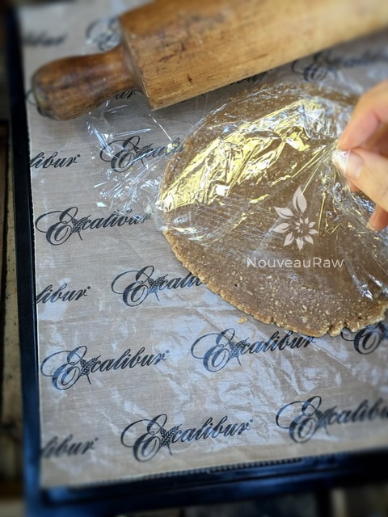
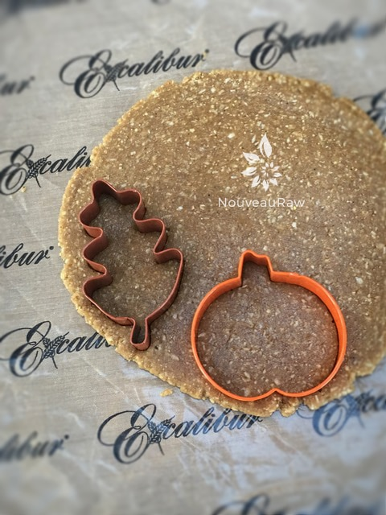
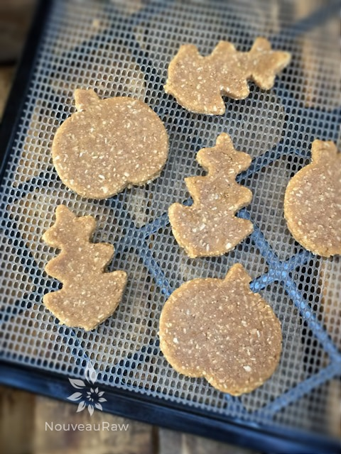
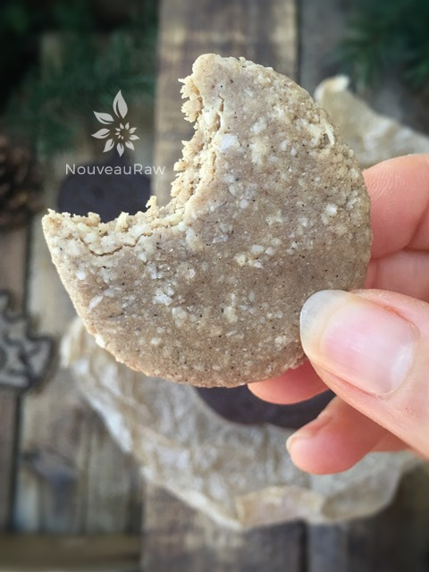
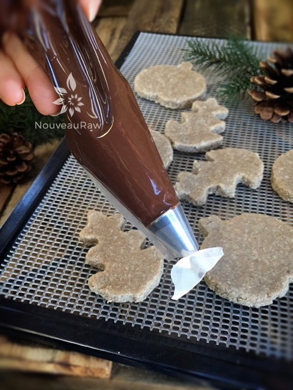
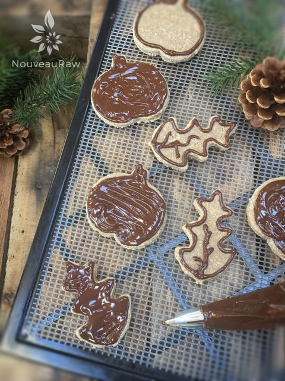

Ginger Pumpkin Spiced Sugar Cookies

~ raw, vegan, gluten-free ~
Growing up I use to love Ginger Snap Cookies dipped in milk. Just the kind that I purposely accidentally dropped in the milk and had to fish out with a spoon. We never had them in our kitchen pantry but gramma did, and I would make a beeline for them whenever I would visit.
These cookies are not hard and crispy like the Nabisco brand but the flavor is there and they hold up beautifully to a dousing in milk!
Having a raw cookie dough that you can roll out, and since ginger snap cookies do come in all shapes, sizes, and textures, you can play around with cookie cutters and have a lot of fun.
To decorate mine this time around, I used chocolate in a piping bag that was fitted with a very tiny tip. This gave me pretty good control to decorate the cookies. I just needed a steady hand.
Before I let you go, I wanted to explain the texture of this cookie. I don’t know about you but when I follow recipes, there must be photos and a good description of the outcome. This comforts me in seeing and knowing that I am on the right track.
So, these cookies are firm but not crunchy. They have a chew to them. They hold their shape and as I shared earlier they are perfect for dunking! And the warming flavors of Autumn spices are ever-present, a perfect ginger cookie.
These cookies are perfect for creating special traditions that can be shared with your loved ones. Not only can you relax in knowing that you are making healthier choices to satisfy your sweet-tooth, but you can also pass times like these onto your children, grandchildren, or other loved ones. Some of my favorite memories in life were created in a kitchen. So keep the following things in mind…
It is way more enjoyable to have some helpers in the kitchen. Let little ones work beside you. Pull a step stool up to the counter and get them involved. With raw food, you don’t have to worry about them getting burned, just keep sharp objects out of their reach. Teach them about measuring spoons and cups. You can measure out the ingredients, but let them do the pouring.
Talk about each ingredient that is being used and what role it has in the recipe. Isn’t it a comforting feeling to know that not only can they pronounce the ingredients used, so can you! haha What happens if they spill some coconut oil? No worries, have them swipe it off the countertop with the palm of their hand and show them how to rub it into their skin to use a moisturizer! Taste test the ingredients by themselves and also along the way while building the recipe. The beauty with raw foods like this is that you can eat the dough “raw”! Have fun!
Yields 34 (1 Tbsp) cookies
Dry Ingredients:
Wet Ingredients:
- 1 cup raw almond butter
- 1/2 cup maple syrup
- 2 Tbsp raw honey (coconut syrup if vegan)
- 2 Tbsp raw cold-pressed coconut oil, melted
- 1 Tbsp vanilla extract
Optional ~ Decorating with Chocolate:
Preparation:
- In the food processor, fitted with the “S” blade, combine the almond flour, oat flour, salt, cloves, pumpkin spice, and ginger. Pulse together.
- Remove the lid and add; almond butter, sweeteners, coconut oil, and vanilla extract. Process until well incorporated.
- It will form a large ball in the food processor as it spins around.
- How to roll out the cookies:
- You will need 2 large sheets of wax or plastic wrap.
- Place one piece on the kitchen counter, next lay your batter in the center of the paper, add the 2nd piece of paper on top, and using a rolling-pin, roll your dough out to the desired thickness.
- Using cookie cutters, cut out the cookies and place them on the mesh sheet that comes with the dehydrator.
- Dehydrate at 145 degrees (F) for 1 hour, then reduce to 115 degrees (F) for approx. 10 hrs.
- Dry times are always estimates due to several factors; depends on how thick you roll them out and how firm you want your cookie to be. How full the machine is. What the ambient temp and humidity are… and so forth.
- Decoration ideas: sprinkle with raw coconut crystals, frost, or create designs with hardening chocolate… get creative and personalize them.
- Shelf-life: Store in an airtight container and eat within a week. I froze some and they softened quite a bit, still tasty but I won’t freeze these in the future.
Culinary Explanations:
- Why do I start the dehydrator at 145 degrees (F)? Click (here) to learn the reason behind this.
- When working with fresh ingredients it is important to taste test as you build a recipe. Learn why (here).
- Don’t own a dehydrator? Learn how to use your oven (here). I do however truly believe that it is a worthwhile investment. Click (here) to learn what I use.

Roll the dough out to roughly 1/4″ thick. You can make the cookies as thin or thick as you want. Just remember that this will affect the dry time.

Create all the different cookie shapes that you want.

Carefully transfer the cut out cookies to the mesh screen that comes with the dehydrator. This will speed up the dry time by allowing the air to better circulate around the cookies.

This is what I refer to as a taste tester cookie. It’s the left over dough that is too small to use a cookie cutter on. This is my reward. :)

Here’s a quick tip. Place a piece of masking tape over the piping tip opening if the chocolate is too thin to use just yet. This will prevent it from oozing out.

© AmieSue.com